| Entry No.1
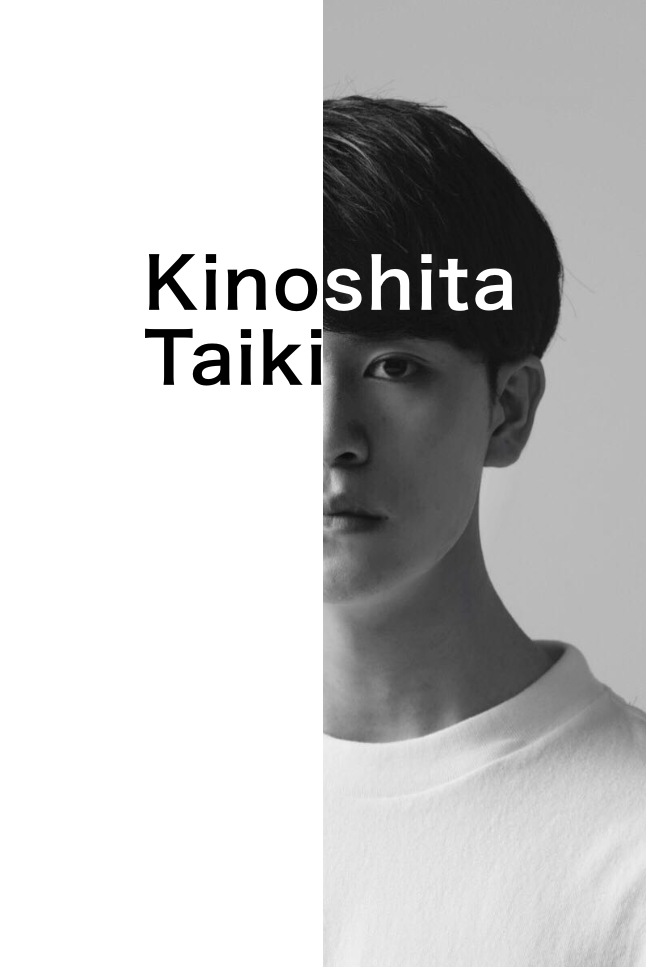| 学部学年 | ：経済学部PEARL学科2年 |
| 身長 | ：178cm |
| 出身 | ：横浜 |
| 趣味 | ：ミュージカルの歌を歌うこと♪ |
| 座右の銘 | ：清く正しく美しく |
| 将来の夢 | ：世界でマルチに活躍する表現者 |
| 賞金100万円の使い道 | ：旅行と洋服！！と少しだけ親孝行😊 |
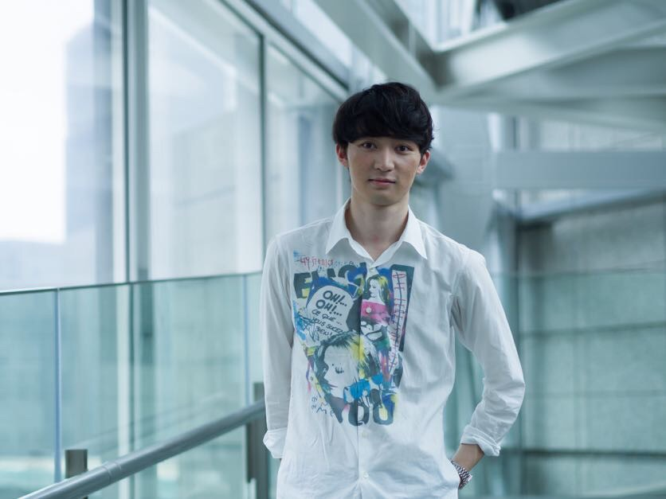
| Entry No.2
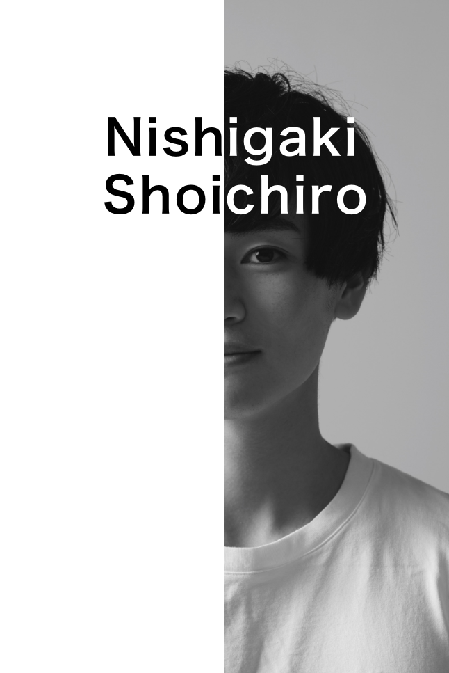| 学部学年 | ：法学部政治学科 2年 |
| 身長 | ：177cm |
| 出身 | ：石川県白山市 |
| 趣味 | ：アイドルの曲を聴くこと、蒙古タンメン(北極)を食べること |
| 座右の銘 | ：I can do this all day |
| 将来の夢 | ：クリス・エヴァンスに会うこと |
| 賞金100万円の使い道 | ：Marvelのフィギュアを買い占める |

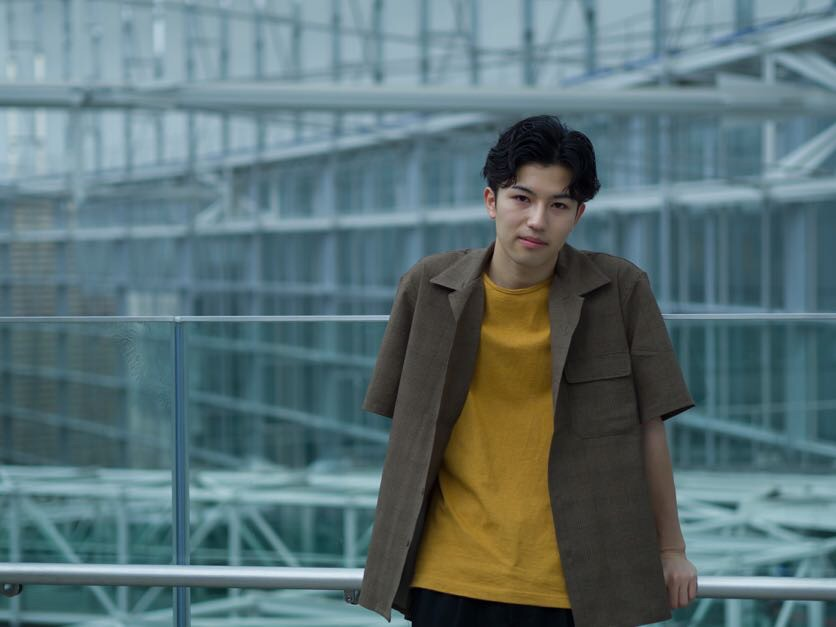
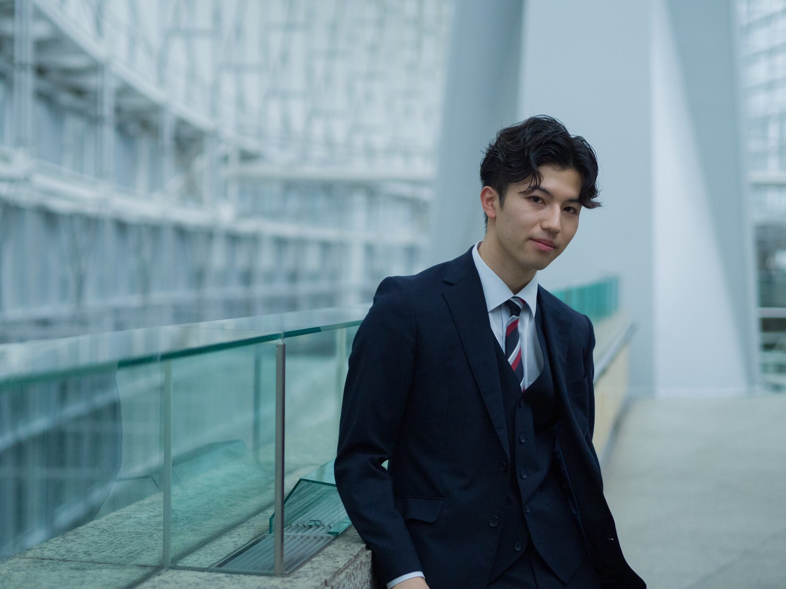
| Entry No.3
| 学部学年 | ：経済学部PEARL学科2年 |
| 身長 | ：182cm |
| 出身 | ：NewYork |
| 趣味 | ：音楽（ギターとサックス） |
| 座右の銘 | ：Vision without action is a daydream |
| 将来の夢 | ：日本と他国の架け橋となるビッグな会社を創る |
| 賞金100万円の使い道 | ：家族を幸せにする |
| Entry No.4
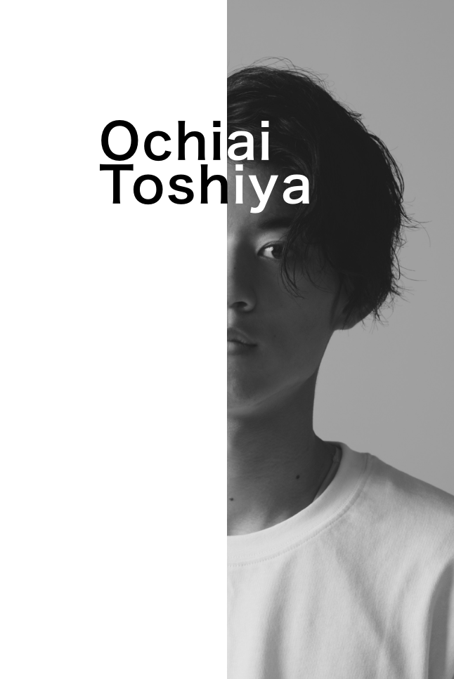| 学部学年 | ：経済学部2年 |
| 身長 | ：181cm |
| 出身 | ：東京 |
| 趣味 | ：サッカー、旅行、キングダム |
| 座右の銘 | ：有言実行aaaaaaaaaaaaaaaaaaaaaaaaaaaaaaaaaaaaaaaaaaaaaaaaaaaaaaaaaaaaaaaaaa |
| 将来の夢 | ：ウユニ塩湖に行く |
| 賞金100万円の使い道 | ：旅行と貯金 |
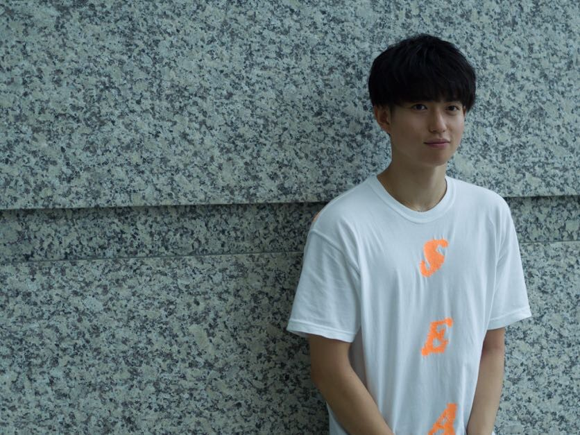


| Entry No.5
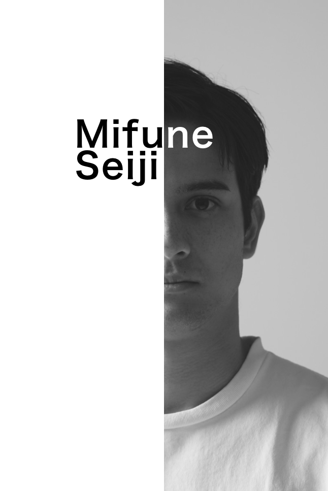| 学部学年 | ：商学部3年 |
| 身長 | ：183cm |
| 出身 | ：葉山町 |
| 趣味 | ：ダンス |
| 座右の銘 | ：笑う門には福来る |
| 将来の夢 | ：後悔のない人生を歩む |
| 賞金100万円の使い道 | ：為せば成る為さねば成らぬ何事も成らぬは人の為さぬなりけり |
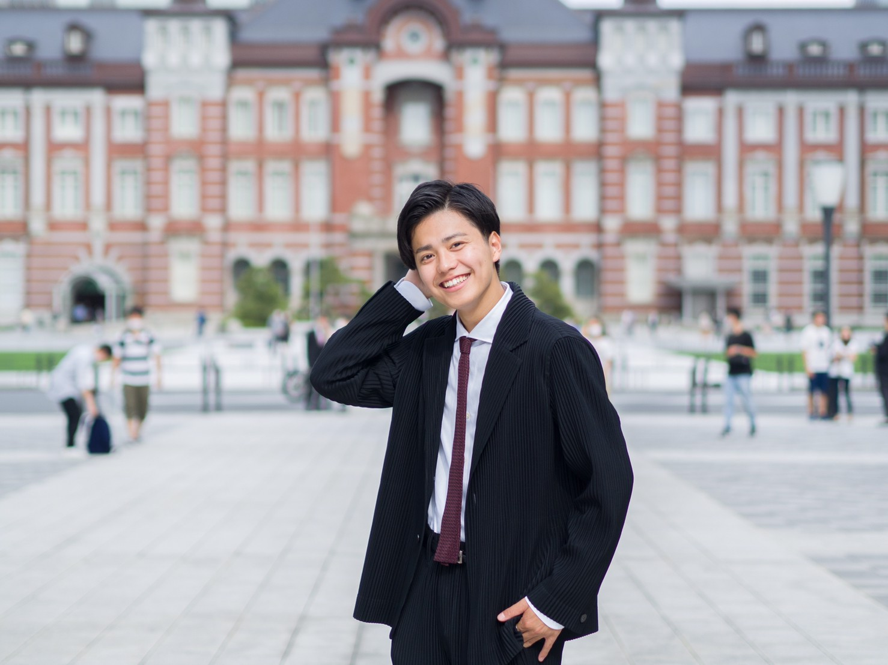
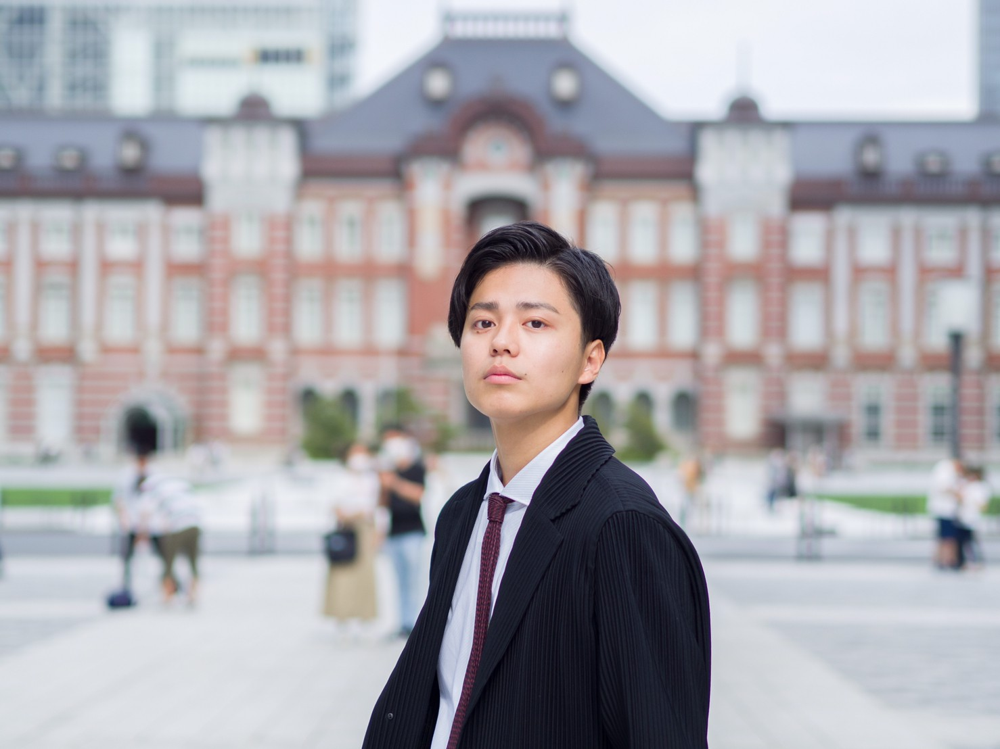
| Entry No.6
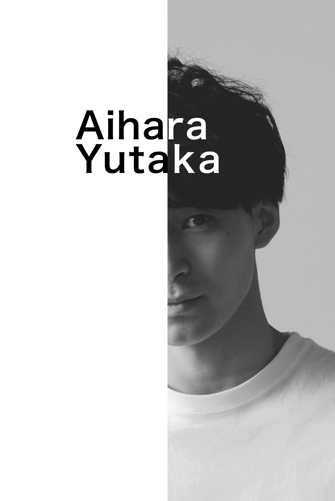| 学部学年 | ：商学部4年 |
| 身長 | ：177cm |
| 出身 | ：横浜 |
| 趣味 | ：筋トレ,海外ドラマ鑑賞 |
| 座右の銘 | ：Fake it till you make it |
| 将来の夢 | ：海外移住 |
| 賞金100万円の使い道 | ：迷惑をかけた両親にプレゼントしたい! |
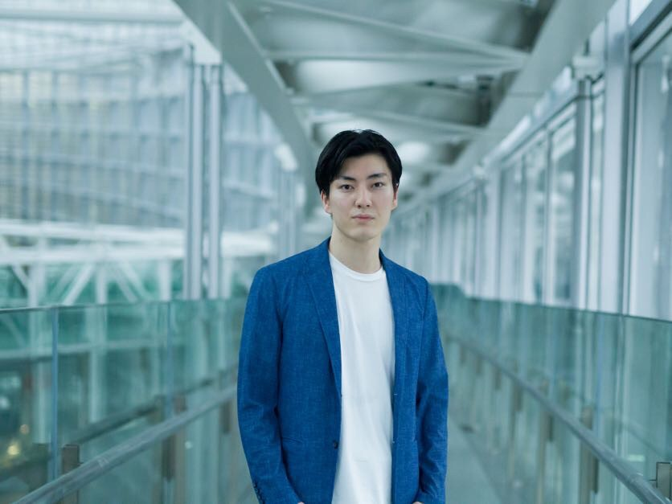
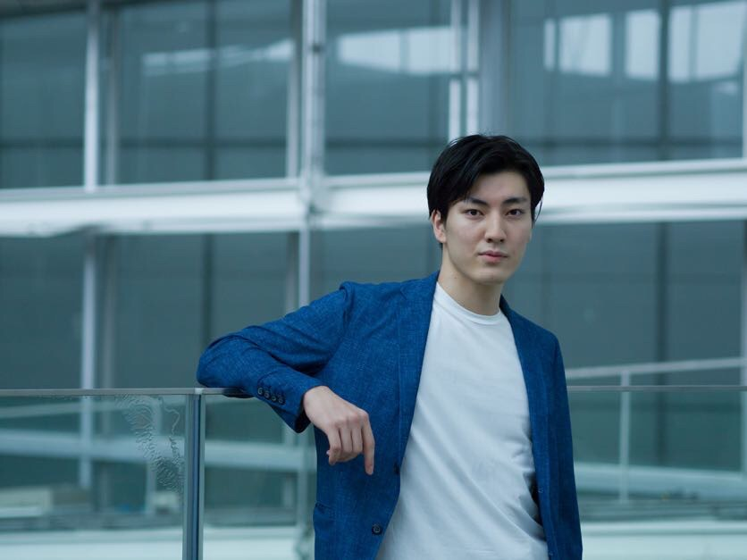
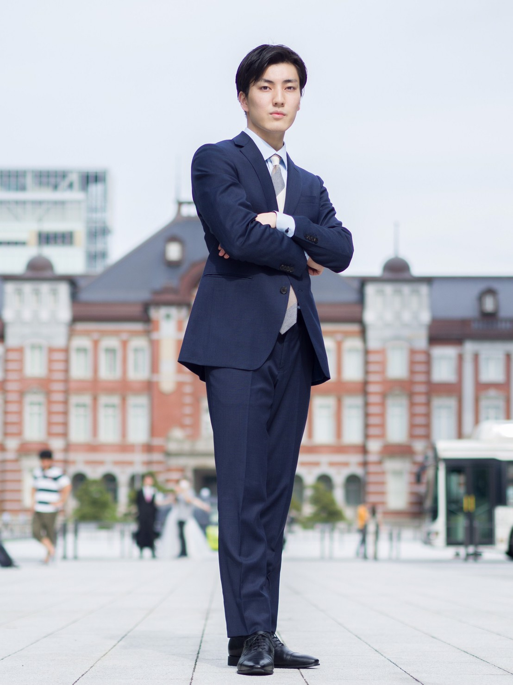
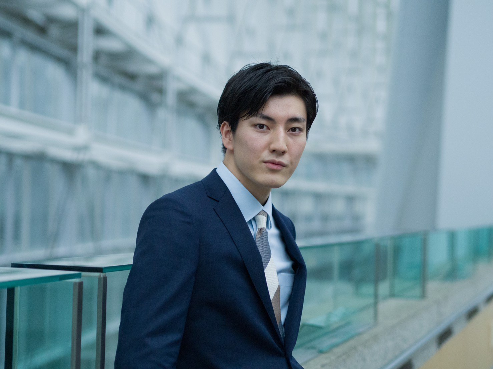